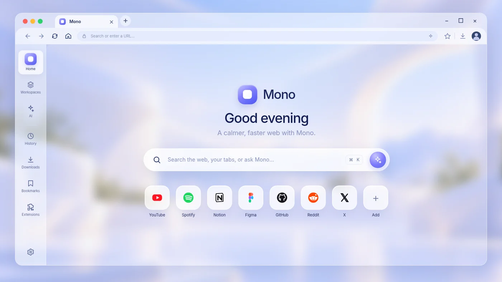
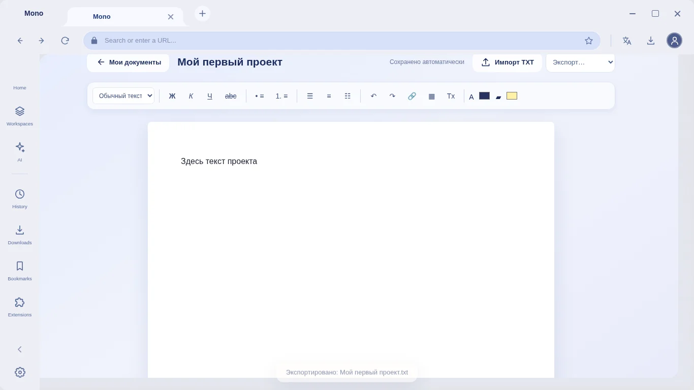
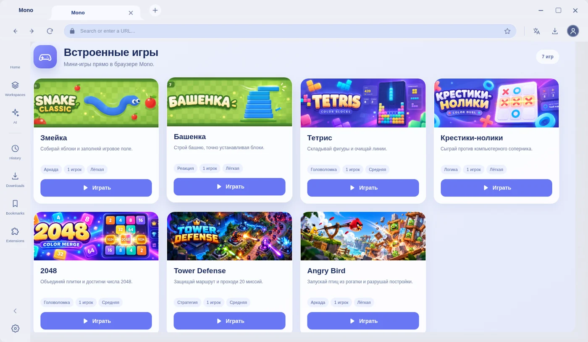
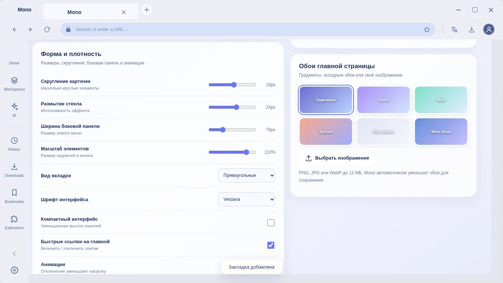

Твоё рабочее пространство
Переключайся между инструментами, а не между приложениями. Работай в собственном ритме.
Смотреть Workspaces
Браузер, в котором всё на своём месте. Вкладки, заметки, игры и инструменты — в едином пространстве, созданном для тебя.

Не нужно открывать десятки отдельных программ. Mono объединяет привычный веб и удобные инструменты в одном интерфейсе.
Переключайся между инструментами, а не между приложениями. Работай в собственном ритме.
Смотреть WorkspacesВстроенный помощник для простых вопросов, вычислений и повседневных задач.
Защищённое файловое хранилище с PIN-кодом и настройками доступа.
Создавай документы в Notes, форматируй текст, импортируй TXT и экспортируй результат.


Загляни в разные разделы Mono. Никаких вымышленных экранов — настоящие скриншоты проекта.
Mono создаётся вокруг одной мысли: браузер должен помогать тебе сосредоточиться, а не отвлекать. Простой внешний вид, привычная логика и инструменты, до которых один клик.
Темы, цвета, фон и компоновка под твой вкус.
Заметки, перевод, медиа, закладки и многое другое.
Аккуратный интерфейс и удобная навигация.

Проверяй параметры интернет-соединения в самом Mono.
Работай с иностранными текстами, не покидая браузер.
Общение, группы и файлы в экспериментальном встроенном мессенджере.
Две страницы рядом, когда одной вкладки недостаточно.
Попробуй другой подход к привычному браузеру.
Скачать Mono для WindowsКоротко о Mono — без сложных формулировок.
Mono — независимый проект десктопного браузера на Electron и Chromium. Помимо просмотра сайтов, он объединяет полезные инструменты в одном интерфейсе.
Проект ориентирован на Windows 10 и Windows 11. Возможности и совместимость могут меняться по мере разработки.
Часть инструментов, например локальные заметки и встроенные игры, может работать без интернета. Веб-сайты, сетевые проверки, обмен сообщениями и другие онлайн-функции требуют соединения.
Нажми «Скачать Mono» — установщик доступен через Google Drive. Google может запросить подтверждение загрузки файла.
Да. В Customize можно выбирать оформление, темы, акцентные цвета и другие параметры интерфейса.
Для получения установщика перейди по ссылке скачивания Mono.